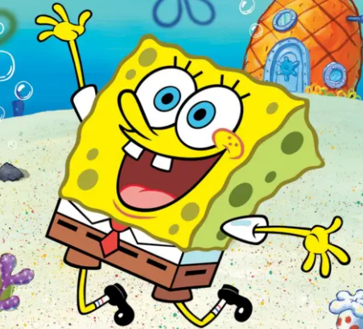
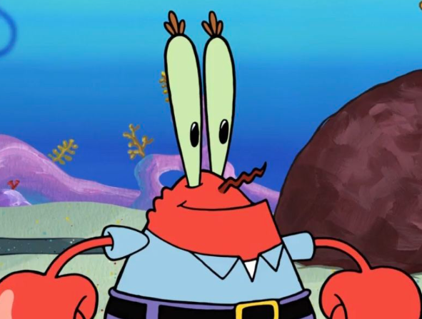
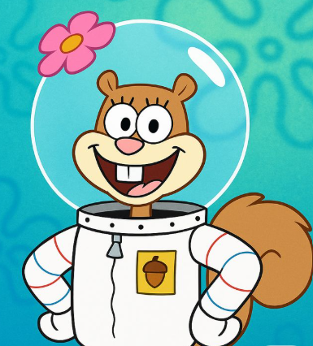

Halo, perkenalkan kami mahasiswa Pendidikan Matematika Universitas Sebelas Maret Surakarta angkatan 2019. Kami beranggotakan 5 orang, diantaranya :
SpongeBob SquarePants (SpongeBob)

Perkenalkan saya SpongeBob SquarePants, biasa dipanggil SpongeBob, Saya sekarang sedang menempuh pendidikan di Universitas Sebelas Maret Surakarta (UNS) program studi Pendidikan Matematika Semester IV dengan NIM K1319000. Sesuai dengan program studi saya, maka semua yang saya tulis adalah tentang pendidikan, terutama pendidikan matematika. Semoga tulisan saya dapat bermanfaat bagi khalayak umum. Untuk lebih lanjut mengenal saya boleh di-follow IG saya, @spongebob. Terima kasih atas perhatian kalian semua yang sudah mau membaca tulisan kami
Patrick Star (Patrick)
Perkenalkan saya Patrick Star, biasa dipanggil Patrick, Saya sekarang sedang menempuh pendidikan di Universitas Sebelas Maret Surakarta (UNS) program studi Pendidikan Matematika Semester IV dengan NIM K1319000. Sesuai dengan program studi saya, maka semua yang saya tulis adalah tentang pendidikan, terutama pendidikan matematika. Semoga tulisan saya dapat bermanfaat bagi khalayak umum. Untuk lebih lanjut mengenal saya boleh di-follow IG saya, @officialpatrickstar. Terima kasih atas perhatian kalian semua yang sudah mau membaca tulisan kami
Tuan Krab

Perkenalkan saya Tuan Krab, biasa dipanggil Tuan Krab, Saya sekarang sedang menempuh pendidikan di Universitas Sebelas Maret Surakarta (UNS) program studi Pendidikan Matematika Semester IV dengan NIM K1319000. Sesuai dengan program studi saya, maka semua yang saya tulis adalah tentang pendidikan, terutama pendidikan matematika. Semoga tulisan saya dapat bermanfaat bagi khalayak umum. Untuk lebih lanjut mengenal saya boleh di-follow IG saya, @tuankrab. Terima kasih atas perhatian kalian semua yang sudah mau membaca tulisan kami
Squidward Tentacle (Squidward)
Perkenalkan saya Squidward Tentacle, biasa dipanggil Squidward, Saya sekarang sedang menempuh pendidikan di Universitas Sebelas Maret Surakarta (UNS) program studi Pendidikan Matematika Semester IV dengan NIM K1319000. Sesuai dengan program studi saya, maka semua yang saya tulis adalah tentang pendidikan, terutama pendidikan matematika. Semoga tulisan saya dapat bermanfaat bagi khalayak umum. Untuk lebih lanjut mengenal saya boleh di-follow IG saya,@squidward . Terima kasih atas perhatian kalian semua yang sudah mau membaca tulisan kami
Sandy Cheeks (Sandy)

Perkenalkan saya Sandy Cheeks, biasa dipanggil Sandy, Saya sekarang sedang menempuh pendidikan di Universitas Sebelas Maret Surakarta (UNS) program studi Pendidikan Matematika Semester IV dengan NIM K1319000. Sesuai dengan program studi saya, maka semua yang saya tulis adalah tentang pendidikan, terutama pendidikan matematika. Semoga tulisan saya dapat bermanfaat bagi khalayak umum. Untuk lebih lanjut mengenal saya boleh di-follow IG saya, @sandycheecks. Terima kasih atas perhatian kalian semua yang sudah mau membaca tulisan kami